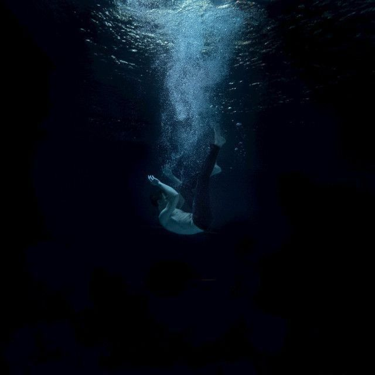
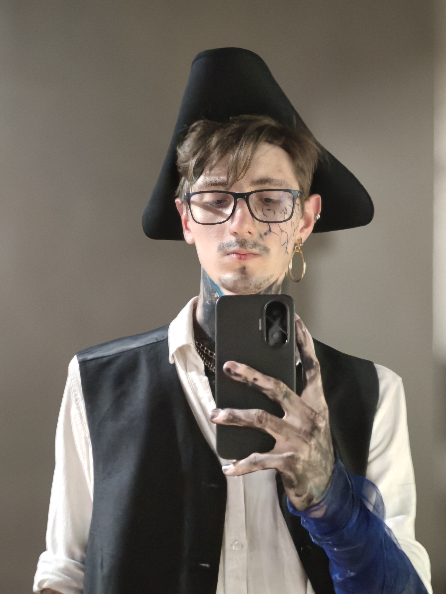

O VAZIO
Fantasia de Halloween — Por Wendel Risse
Origem
Ano passado, escolhi o fracasso como tema de fantasia. Mas e depois? O que vem depois do fracasso?
O Vazio. Engolindo as pessoas, consumindo-as, definhando suas almas. Um metamorfo sádico que toma a forma de suas vítimas.
A origem dessa fantasia vem da ideia que minhas fantasias são uma representação conceitual dos sentimentos ruins que me atordoaram durante o ano até chegar no halloween. É sobre se sentir consumido pela noite, passar horas acordado procurando algo, alguém, um propósito, algo que me tire desse mar frio e escuro que me afunda cada vez mais.
Conceito
Quem navega demais pelas ondas da vida, uma hora está fadado a cair no mar e ser consumido pelo vazio interminável de suas águas. Assim como um pirata, que não sabe os riscos que a vida aguarda, destinado a cair, a afundar e a sofrer.
Depois do fracasso, só lhe resta afundar e sofrer num abismo de nada.
Toda calada da noite ele afunda, o navio parado,
ele cai nas escuras águas e se torna um com o abismo.
Simbolismo
“O Vazio” é uma maneira de transformar o sentimento, em um monstro físico, no caso da fantasia, ele é um metamorfo que afoga suas vítimas, consome elas e depois toma a forma delas. A roupa é inspirada num pirata, que representa um navegador, onde ele navega pelas ondas da vida, mas nas noites escuras, ele cai do barco, ficando frente a frente com "O Vazio". A fantasia nos braços, traz essa fumaça de tinta preta, junto com tinta azul e o tecido azul escuro, pra representar o fundo do mar e o misticismo por trás do vazio. A perna ferida representa as lutas com as dificuldades da vida e a tinta no pescoço é a sensação da falta de ar. A adaga representa a dualidade de pirata e conceito, assim como seu corpo, sua adorada adaga agora também faz parte do abismo, contém elementos de gancho pra representar o pirata, mas também uma floresta preta consumindo esses elementos.
Talvez seja uma das razões pela qual ele tenha seu barco a terras tão distantes, na tentativa de fugir desse sentimento que o me consome. Mas não importa o quanto ele navegue... O Vazio sempre chega.
